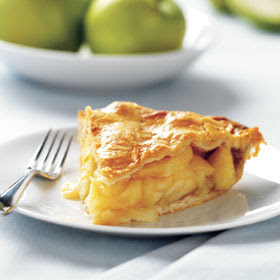

DELÍCIAS DIARIAS
Categorias
Bolo
Tortas
Ultimas Receitas
Bolo de Chocolate
Torta de Maçã
Receber nossas receitas
Fale conosco
Torta de maçã
Ingredientes
3 maçãs
Suco de 1 limão
1 xícaras e meia de farinha de trigo
3 ovos inteiros batidos
2 xícaras de açúca
2 colheres de chá de fermento em pó
100g de manteiga derretida
Açúca e canela pra polvilhar
Modo de Preparo
Em um recipiente misture o trigo, o açúcar e o fermento
Corte as maçãs em rodelas e coloque o suco de limão para que não escureçam
Bata os ovos, as claras junto com as gemas
Derreta a manteiga
Unte um refratário e monte a torta: primeiro as maçãs, polvilhando com açúcar e canela.
Por cima a mistura dos ingredientes secos
Em seguida a manteiga derretida
Termine com os ovos batidos
Espalhe bem, cobrindo toda a superfície
Polvilhe um pouco mais de açúcar e canela
Leve ao forno médio para assar por 25 minutos
Serva quente ou fria.
Imagem da torta pronta
